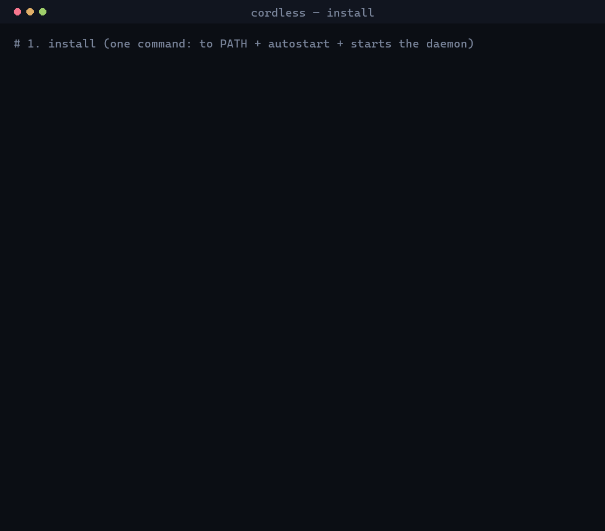
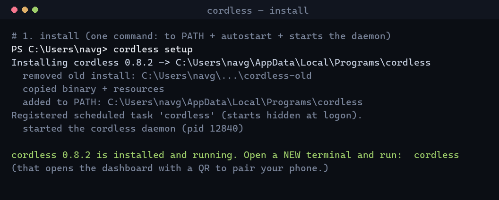
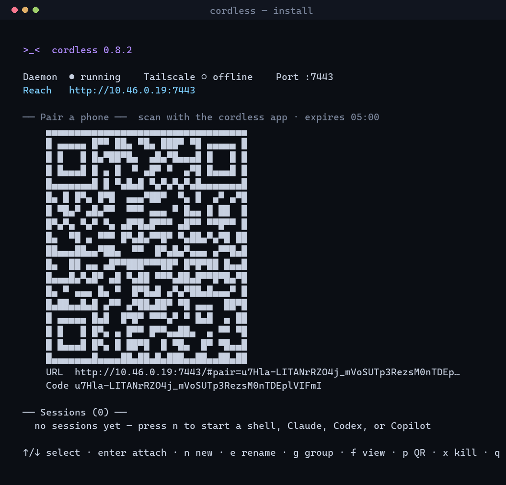
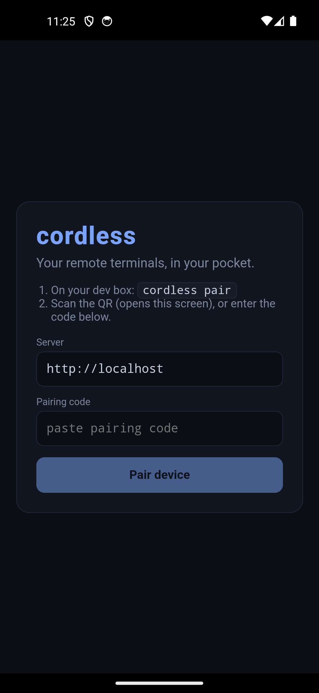
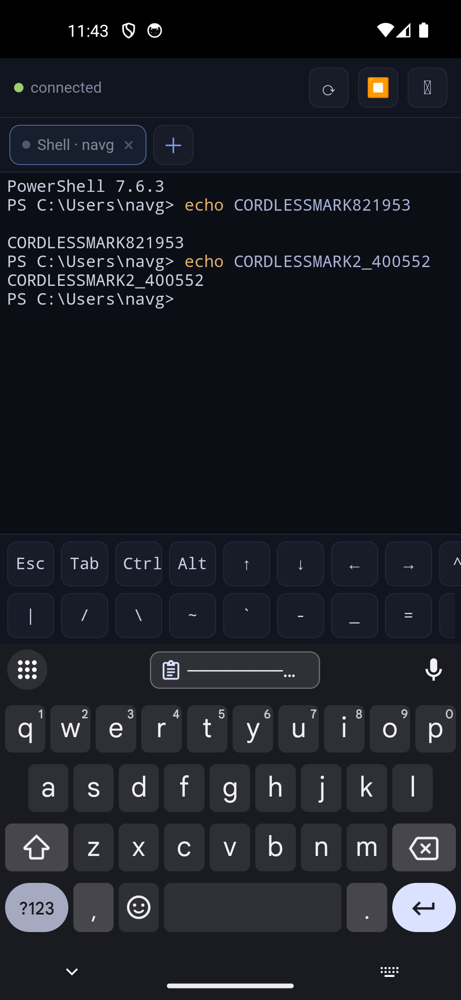

remote terminals, in your pocket
cordless is a CLI-first remote terminal. Run cordless, scan the QR,
and drive many Claude Code, Codex, GitHub Copilot,
and shell sessions from anywhere — like browser tabs for your terminal.
$ cordless setup && cordless # install + a pairing QR
// what it is
cordless is a single self-contained binary you install on your dev box or laptop. Run
cordless and it opens a full-screen terminal dashboard whose starting
screen is a pairing QR — scan it with the phone app and your sessions (a shell,
claude, codex, copilot, or your own custom launchers)
are in your pocket. Organise them into tab groups, rename tabs, and keep going after a
reboot — sessions are restored with their scrollback history. The daemon stays up after
you close the dashboard, and reconnecting replays exactly where you left off.
// features
One self-contained binary — its own Node runtime and node-pty, no install prereq. Run cordless for a full-screen dashboard: status, a live pairing QR, and your sessions.
Juggling many agents? cordless infers which is working, idle, or waiting for you from its output, badges and sorts them attention-first, and can ping your phone (ntfy / webhook).
PTYs survive disconnects, network switches, and app backgrounding. Reconnect and it replays from your last-seen byte, or a full-screen snapshot.
From the dashboard press o to open a session in a new terminal tab (Windows Terminal) — like browser tabs. Chrome-mobile-style groups keep >10 sessions tidy on the phone.
Tailscale is the recommended path; same-Wi-Fi LAN also works. No ports exposed to the public internet — ever.
Per-device hashed tokens, single-use pairing codes only the local daemon can mint (loopback-only), an Origin allowlist, strict CSP — and a daemon that only ever runs as you.
// changelog
start & built-in helpcordless start detaches cleanly in every environment (plain shell, Chocolatey shim, or CI). And cordless documents itself: cordless help <command> shows usage, options, and examples for anything.
The app shows each agent as a colored icon (shell, Claude, Codex, GitHub Copilot) instead of a name, and the on-screen key bar scrolls so Esc/Tab/arrows/^C are all reachable. Open a session in a new tab with o.
Chrome-mobile-style groups, your own profiles in ~/.cordless/config.json (any command/args/cwd/env), and live rename from the dashboard e key or a long-press on the phone.
A capped, plain-text scrollback is saved per session, so a reopened session after a reboot shows what it was doing before — cordless history to inspect or clear it.
// install
cordless setup installs + starts the daemon; cordless shows a QR you scan with the phone.

Download the self-contained cordless CLI from Releases — it bundles its own Node runtime and node-pty, so there's nothing to install first.
Windows cordless-cli-windows-x64.zip → run cordless.exe Linux cordless-cli-linux-x64.tar.gz → run ./cordless macOS use the desktop app, or build from source
Then let cordless install itself in one step:
$ cordless setup # copy to a stable path, add to PATH + autostart, START the daemon $ cordless # open the dashboard: status + a pairing QR + your sessions $ cordless install # (alt) just register the daemon to run at login
cordless setup is the whole installer: it copies the binary, adds it to PATH, registers autostart, cleans up any older install, and starts the daemon. Open a new terminal and run cordless.

cordless's starting screen shows a QR. Install the Android app, tap Scan QR, and scan it. (Or press p for a fresh code, run cordless pair, or open the printed URL in your phone's browser as a PWA.)

Put the dev box and phone on the same Tailscale tailnet and lock port 7443 to your own devices with a tailnet ACL. The pairing QR then uses a stable 100.x / *.ts.net address. Never expose 7443 to the public internet.
Manage it: cordless status · cordless doctor · cordless sessions ·
cordless attach <id> · cordless resume · cordless profiles ·
cordless group · cordless rename <id> <title> · cordless history ·
cordless notify test · cordless stop.
$ git clone https://github.com/naveenneog/cordless $ cd cordless $ npm run setup # installs agent + client deps (builds node-pty) $ npm run build # builds the web client the daemon serves $ npm start # daemon on :7443 — then `node agent/src/index.js` for the dashboard $ npm --prefix agent run sea # build a self-contained binary into agent/dist-sea/
// requirements
Nothing. The CLI is a self-contained binary (its own Node runtime + node-pty) for Windows or Linux. Optional: coding agents on PATH (claude, codex, copilot), or add your own launchers.
Any modern browser (install the PWA), or Android 8.0+ for the APK. Nothing else to install.
Tailscale on the dev box and phone for secure access from anywhere. Same-Wi-Fi LAN needs nothing extra.
Only if you build it yourself: Node ≥ 22 and a C/C++ toolchain for node-pty; for the APK, add JDK 21 + the Android SDK. Most people just grab the prebuilt binaries.
// desktop
The CLI is the primary way to run cordless — the desktop app is a thin, hardened Electron
window over the same local daemon the CLI runs, so install the CLI first
(cordless setup). Same sessions, tabs, groups, and replay as the phone — with a real keyboard.
If it opens to a "daemon isn't running" screen, it finds your installed CLI and offers to start it.
Pairing stays QR/code based. The desktop adds one 🖥️ Connect to this computer button backed by a loopback-only credential.
That credential lives in ~/.cordless/desktop-credential.json (mode 0600) and is rejected for any non-loopback address — even a Tailscale IP.
If the daemon is down, the app shows a Start daemon / Retry screen instead of failing silently.
Grab an installer from Releases
(Windows .exe, macOS .dmg, Linux .AppImage/.deb).
// on your phone


{kind=link}